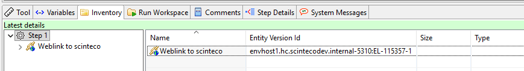

Basic Node Types
2026-01-13
basic-node-types.RmdTutorial: Basic Node Types
This tutorial introduces the fundamental node types in the improve platform: Files, Folders, Links, and External Links. You’ll learn how to create, manage, and work with these basic building blocks of the improve repository.
Environment Variables
This tutorial requires the following environment variables to be set.
We recommend creating a .Renviron file in your project root
with these variables:
# Add these lines to your .Renviron file:
# Sys.setenv(IMPROVER_REPO_URL = "https://<url>:<repoPort>/repository")
# Sys.setenv(IMPROVER_STEP = "<valid-entityId>") # Ideally the entityId of your tutorial folderTutorial Configuration
# Define the test folder path for this tutorial
# Suggested path structure: /Projects/tutorials/<userName>/tutorial1
TUTORIAL_FOLDER <- "/Projects/tutorials/myUserName/tutorial1-basic-nodes" # Update with your username
# Check if environment variables are set
if (Sys.getenv("IMPROVER_REPO_URL") == "") {
stop("IMPROVER_REPO_URL environment variable is not set. Please set it in your .Renviron file.")
}
if (Sys.getenv("IMPROVER_STEP") == "") {
stop("IMPROVER_STEP environment variable is not set. Please set it in your .Renviron file.")
}
# Display current configuration
cat("Repository URL:", Sys.getenv("IMPROVER_REPO_URL"), "\n")
cat("Step ID:", Sys.getenv("IMPROVER_STEP"), "\n")
cat("Tutorial folder:", TUTORIAL_FOLDER, "\n")Connect to Repository
# Connect to improve repository
improveConnect()
# Verify connection is valid
# This is useful if your session has been idle or if tokens have expired
checkConnect()
# Enable editing capabilities
setEditable(TRUE)Verify Tutorial Folder
# Check if tutorial folder exists
tutorialResource <- tryCatch({
loadResource(TUTORIAL_FOLDER)
}, error = function(e) {
NULL
})
if (is.null(tutorialResource)) {
stop(paste("Tutorial folder", TUTORIAL_FOLDER, "does not exist in the repository.",
"Please create it first or use a different folder."))
}
if (tutorialResource$nodeType != "Folder") {
stop(paste(TUTORIAL_FOLDER, "exists but is not a folder. Please use a folder path."))
}
cat("Tutorial folder found:", tutorialResource$path, "\n")
cat("Resource ID:", tutorialResource$resourceId, "\n")
cat("Entity ID:", tutorialResource$entityId, "\n")
cat("\nTip: You can use this Entity ID as your IMPROVER_STEP for better path resolution.\n")
# Check if folder is empty
childResources <- loadChildResources(tutorialResource)$data[[1]]
if (!is.null(childResources) && nrow(childResources) > 0) {
cat("\nWarning: Tutorial folder is not empty. It contains", nrow(childResources), "items:\n")
print(childResources[, c("name", "nodeType")])
# Ask user if they want to continue
response <- readline(prompt = "Do you want to continue anyway? (yes/no): ")
if (tolower(response) != "yes") {
stop("Tutorial cancelled. Please use an empty folder or clear the existing folder.")
}
} else {
cat("Tutorial folder is empty and ready for use.\n")
}
# Store tutorial folder resource for later use
TUTORIAL_RESOURCE <- tutorialResource1. Working with Folders
Folders are containers for organizing files and other resources in the improve repository.
# Create a folder structure for our examples
cat("\n=== Creating Folder Structure ===\n")
# Create main folders
dataFolder <- createFolder(
folderName = "data",
targetIdent = TUTORIAL_RESOURCE$entityId,
comment = "Folder for data files"
)
cat("Created folder:", dataFolder$path, "\n")
scriptsFolder <- createFolder(
folderName = "scripts",
targetIdent = TUTORIAL_RESOURCE$entityId,
comment = "Folder for R scripts"
)
cat("Created folder:", scriptsFolder$path, "\n")
outputsFolder <- createFolder(
folderName = "outputs",
targetIdent = TUTORIAL_RESOURCE$entityId,
comment = "Folder for output files"
)
cat("Created folder:", outputsFolder$path, "\n")
# Create a subfolder
rawDataFolder <- createFolder(
folderName = "raw",
targetIdent = dataFolder$entityId,
comment = "Raw data files"
)
cat("Created subfolder:", rawDataFolder$path, "\n")
# List all folders in tutorial folder
cat("\n=== Current Folder Structure ===\n")
children <- loadChildResources(TUTORIAL_RESOURCE)$data[[1]]
print(children[children$nodeType == "Folder", c("name", "path", "entityId")])2. Working with Files
Files are standard digital files stored in the repository with full version control.
cat("\n=== Creating Files ===\n")
# Create a sample data file
sampleData <- data.frame(
id = 1:10,
value = rnorm(10),
category = sample(c("A", "B", "C"), 10, replace = TRUE)
)
# Save locally first
write.csv(sampleData, "sample_data.csv", row.names = FALSE)
# Upload to repository
dataFile <- createFile(
targetIdent = rawDataFolder$entityId,
fileName = "sample_data.csv",
localPath = "sample_data.csv",
comment = "Sample dataset for tutorial"
)
cat("Created file:", dataFile$path, "\n")
cat("Entity ID:", dataFile$entityId, "\n")
cat("Version ID:", dataFile$entityVersionId, "\n")
# Create an R script file
scriptContent <- '# Simple analysis script
data <- read.csv("sample_data.csv")
summary(data)
plot(data$value, main = "Sample Data Values")
'
writeLines(scriptContent, "analysis_script.R")
scriptFile <- createFile(
targetIdent = scriptsFolder$entityId,
fileName = "analysis_script.R",
localPath = "analysis_script.R",
comment = "Basic analysis script"
)
cat("\nCreated script:", scriptFile$path, "\n")
# Clean up local files
unlink(c("sample_data.csv", "analysis_script.R"))3. File Versioning
Every change to a file creates a new version, preserving the complete history.
cat("\n=== File Versioning ===\n")
# Modify the data file
modifiedData <- sampleData
modifiedData$value <- modifiedData$value * 2
modifiedData$new_column <- runif(10)
write.csv(modifiedData, "sample_data_v2.csv", row.names = FALSE)
# Update the file (creates new version)
updatedFile <- updateFileContent(
ident = dataFile$entityId,
localPath = "sample_data_v2.csv",
comment = "Updated data with new column and scaled values"
)
cat("Original version:", dataFile$entityVersionId, "\n")
cat("New version:", updatedFile$entityVersionId, "\n")
cat("Entity ID (unchanged):", updatedFile$entityId, "\n")
# View file history
history <- loadHistory(dataFile$entityId)$data[[1]]
cat("\n=== File History ===\n")
print(history[, c("entityVersionId", "lastModifiedOnDate", "comment")])
# Clean up
unlink("sample_data_v2.csv")4. Working with Links
Links are stable pointers to specific versions of resources. They ensure referential integrity by always pointing to the same version unless explicitly updated.
cat("\n=== Creating Links ===\n")
# Create a link to the current version of our data file
dataLink <- createLink(
links = updatedFile$entityVersionId,
linkName = "stable_data_link",
linkContainer = outputsFolder$resourceId
)
cat("Created link:", dataLink$path, "\n")
cat("Link points to version:", dataLink$targetRevisionId, "\n")
cat("Target file version:", updatedFile$entityVersionId, "\n")
# Now update the data file again
cat("\n=== Updating the File Again ===\n")
finalData <- modifiedData
finalData$value <- finalData$value * 1.5
finalData$final_column <- "final_version"
write.csv(finalData, "sample_data_v3.csv", row.names = FALSE)
# Create another new version
finalFile <- updateFileContent(
ident = dataFile$entityId,
localPath = "sample_data_v3.csv",
comment = "Final update with additional changes"
)
cat("New file version created:", finalFile$entityVersionId, "\n")
# Check that the link still points to the old version
cat("\n=== Link Stability After File Update ===\n")
linkCheck <- updateResource(dataLink$entityId)
cat("Link still points to version:", linkCheck$targetRevisionId, "\n")
cat("Current file version:", finalFile$entityVersionId, "\n")
cat("Link is stable: ", linkCheck$targetVersionId == updatedFile$resourceVersionId, "\n")
# Update the link to point to the new version
cat("\n=== Updating the Link ===\n")
updatedLink <- updateLinks(
links = dataLink$entityId,
comment = "Updated link to point to latest version"
)
updatedLink <- updateResource(dataLink$entityId)
cat("Link now points to version:", updatedLink$resourceVersionId, "\n")
cat("Matches current file version:", updatedLink$targetVersionId == finalFile$resourceVersionId, "\n")
# Clean up
unlink("sample_data_v3.csv")5. Working with External Links
External links point to resources outside the improve repository, specified by URLs.
cat("\n=== Creating External Links ===\n")
# Create an external link to documentation
docLink <- createExternalLink(
url = "https://scinteco.com",
linkName = "Scinteco Webpage",
targetIdent = TUTORIAL_RESOURCE$resourceId
)
cat("Created external link:", docLink$path, "\n")
cat("URL:", docLink$url, "\n")
# Create an external link to a data source
dataSourceLink <- createExternalLink(
url = "https://data.gov/dataset/example",
linkName = "External_Data_Source",
targetIdent = dataFolder$resourceId
)
cat("\nCreated external link:", dataSourceLink$path, "\n")
6. Exploring Resource Properties
Every resource in improve has standard properties that help track and manage it.
cat("\n=== Resource Properties ===\n")
# Load a resource and examine its properties
resource <- loadResource(dataFile$entityId)
cat("Resource Name:", resource$name, "\n")
cat("Node Type:", resource$nodeType, "\n")
cat("Entity ID:", resource$entityId, "\n")
cat("Entity Version ID:", resource$entityVersionId, "\n")
cat("Resource ID:", resource$resourceId, "\n")
cat("Path:", resource$path, "\n")
cat("Created At:", as.character(resource$createdAtDate), "\n")
cat("Created By:", resource$createdByName, "\n")
cat("Is Version:", resource$isVersion, "\n")
# Check metadata
metadata <- loadMetaData(resource$entityId)$data[[1]]
if (!is.null(metadata) && nrow(metadata) > 0) {
cat("\n=== Metadata ===\n")
print(metadata)
}7. Summary and Best Practices
cat("\n=== Summary of Created Resources ===\n")
# List all resources created in this tutorial
allChildren <- loadChildResources(TUTORIAL_RESOURCE)$data[[1]]
resourceSummary <- allChildren[, c("name", "nodeType", "path")]
print(resourceSummary)
cat("\n=== Key Concepts Covered ===\n")
cat("1. Folders - Organize resources hierarchically\n")
cat("2. Files - Store data with automatic versioning\n")
cat("3. Links - Create stable references to specific versions\n")
cat("4. External Links - Reference resources outside improve\n")
cat("5. Versioning - Every change creates an immutable snapshot\n")
cat("6. Entity IDs - Unique identifiers for precise referencing\n")
cat("\n=== Best Practices ===\n")
cat("- Use descriptive names and comments for all resources\n")
cat("- Organize files in a logical folder structure\n")
cat("- Use links to ensure reproducibility by pointing to specific versions\n")
cat("- Track file history to understand how content has evolved\n")
cat("- Use external links for references that shouldn't be stored in improve\n")Clean Up
# Note: We're leaving the created resources in place for educational purposes
# In a real scenario, you might want to clean up test resources
# Disconnect from improve
improveDisconnect()
cat("\nTutorial completed successfully!\n")
cat("All created resources remain in:", TUTORIAL_FOLDER, "\n")
cat("You can explore them further using the improve web interface.\n")